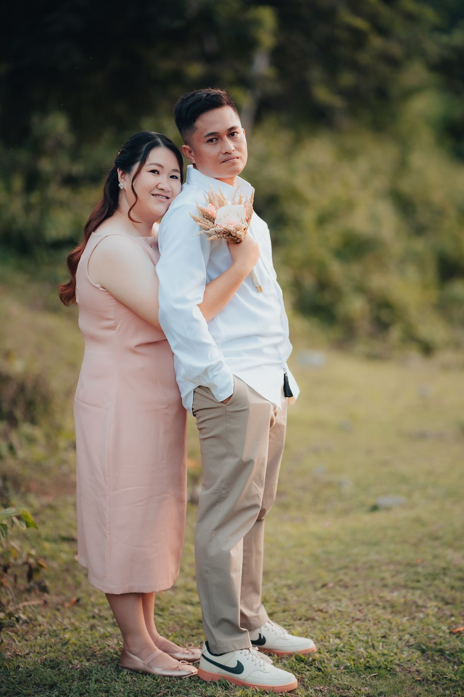

01
A Love Written in the Stars
2015 · Catanduanes State University
Our story began in 2015 at Catanduanes State University, during the first week of classes. Following the election of the Biology Students Society (BIOSSOC), Claire was elected as secretary. Little did she know that this new role would lead to a message that would change her life in the most beautiful way.
“Hi, sec.”
Two simple words from Manlourd became the beginning of a love story we never imagined would lead us here.
But perhaps our paths had crossed long before that first message. When Claire was in sixth grade, she would often play by the big gate, sometimes climbing onto it and riding on it for fun. She would see Manlourd passing by, taking a girl home. He was already in high school, while she was just a little girl, unaware that the boy she casually saw back then would one day become her boyfriend for many years—and eventually, her husband.
Claire never imagined that she and Manlourd would end up together. So many girls admired him, and she never thought she would be the one to capture his heart. Yet life has a beautiful way of surprising us. What once seemed like an ordinary childhood memory became a precious part of a love story that was quietly unfolding.
And so, in 2015, what began with a simple hello grew into a love that would teach us the meaning of patience, commitment, and choosing each other through every season of life.
